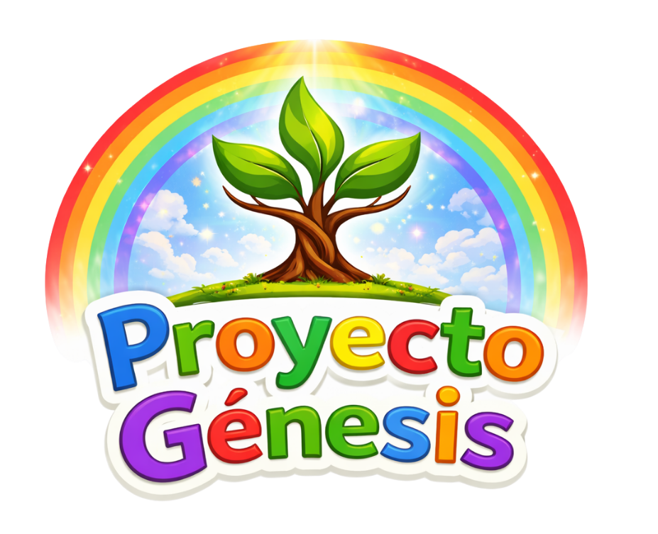

Solange Borges
Fundadora de Proyecto Génesis
"Creo profundamente que cuando un niño entiende quién es en Cristo, su vida cambia para siempre. Por eso, mi llamado es acompañar a familias e iglesias en este camino."

Soñamos con una generación de niños que conozcan a Dios de verdad, que vivan su fe con alegría, convicción y propósito.
Niños que no solo escuchan la Palabra, sino que la entienden, la aman y la viven cada día.
Acompañamos a iglesias y familias con recursos de formación bíblica para niños, prácticos, profundos y centrados en la Palabra de Dios.
Ayudamos a formar una identidad cristiana sólida en la infancia, desarrollando convicción y un propósito claro en cada niño.
Fundadora de Proyecto Génesis
"Creo profundamente que cuando un niño entiende quién es en Cristo, su vida cambia para siempre. Por eso, mi llamado es acompañar a familias e iglesias en este camino."
Proyecto Génesis sigue creciendo y expandiendo su impacto, pero no podemos hacerlo solos.
Si este mensaje también arde en tu corazón y quieres aportar con tus dones, nos encantaría caminar contigo.
Quiero ser parte de esta misiónCreemos que la Biblia es la Palabra de Dios, nuestra autoridad para enseñar, vivir y formar a las nuevas generaciones.
Creemos en un solo Dios, eterno y soberano, revelado como Padre, Hijo y Espíritu Santo.
Creemos que Jesucristo es el Hijo de Dios, nuestro Salvador, quien murió y resucitó para darnos vida nueva.
Creemos que la iglesia y la familia son clave en el crecimiento espiritual de los niños, guiándolos hacia una relación real y personal con Dios.
Antes que enseñar información, formamos quiénes son en Cristo.
Una fe que nace en el corazón y se sostiene en la verdad.
Una comunidad que acompaña y fortalece el crecimiento espiritual.
Descubrir y vivir el llamado de Dios desde la infancia.